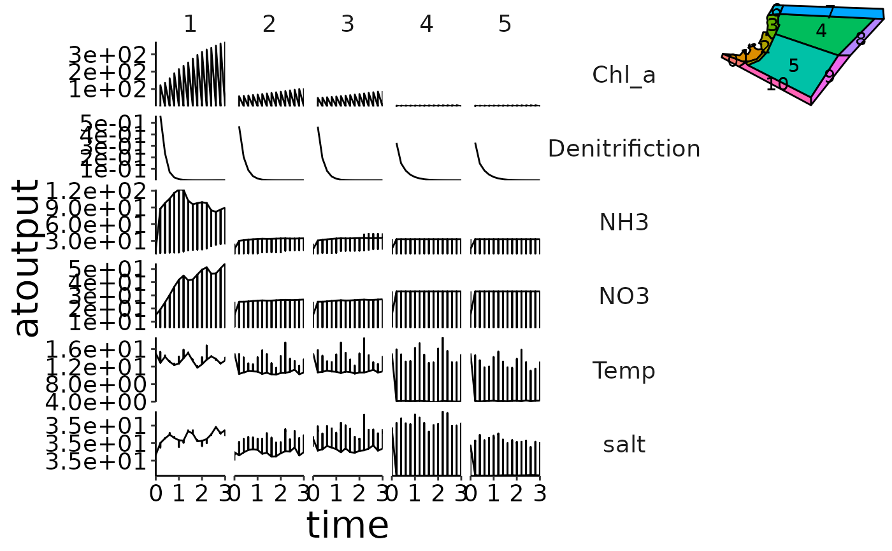

Add spatial representation of polygon layout to a ggplot2 object.
Source:R/plot-add-polygon-overview.R
plot_add_polygon_overview.RdAdd spatial representation of polygon layout to a ggplot2 object.
Arguments
- plot
ggplot2 object. Can be a ggplot grob.
- bgm_as_df
*.bgm file converted to a dataframe. Please use
convert_bgmto convert your bgm-file to a dataframe with columns 'lat', 'long', 'inside_lat', 'inside_long' and 'polygon'.- polygon_overview
numeric value between 0 and 1 indicating the size used to plot the polygon overview in the upper right corner of the plot. Default is
0.2.
Examples
d <- system.file("extdata", "setas-model-new-trunk", package = "atlantistools")
bgm_as_df <- convert_bgm(bgm = file.path(d, "VMPA_setas.bgm"))
p <- plot_line(preprocess$physics, wrap = NULL)
p <- custom_grid(p, grid_x = "polygon", grid_y = "variable")
grob <- plot_add_polygon_overview(p, bgm_as_df)
gridExtra::grid.arrange(grob)
